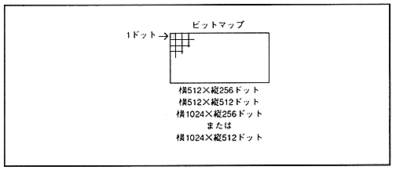
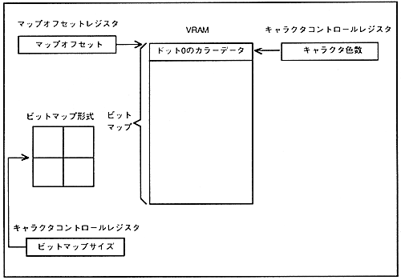

A bitmap scroll screen is composed of a bitmap pattern with a size of 512 dots or 1024 dots horizontally, 256 dots vertically or 512 dots. When displaying the screen in bitmap format, set the bitmap size in the register and store the bitmap pattern of the set size in VRAM.
∙ The configuration of the bitmap scroll screen is shown in Figure 4.3, and the relationship between the bitmap scroll screen and registers is shown in Figure 4.4.
Figure 4.3 Bitmap scroll screen configuration

Figure 4.4 Relationship between Bitmap Format Scroll Screen Configuration and Data Settings
